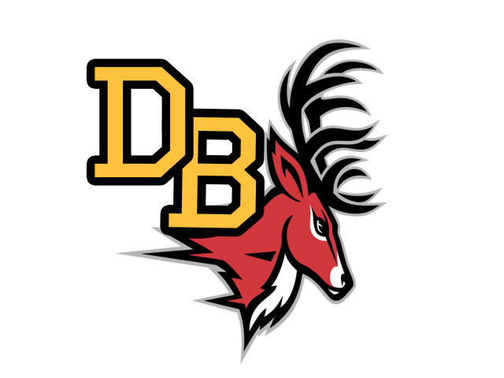

Deer Field
The deer is one of the best animal which is the mascot of Deerfield Beach
- Antlers are very interesting and quite unique physical structures
- In most deer species, they only develop on the male, and they are shed every year after the mating season
- they are covered in an extremely soft living tissue that is known as velvet
- The older a deer is, the more branches develop in the antlers

Link to the Index